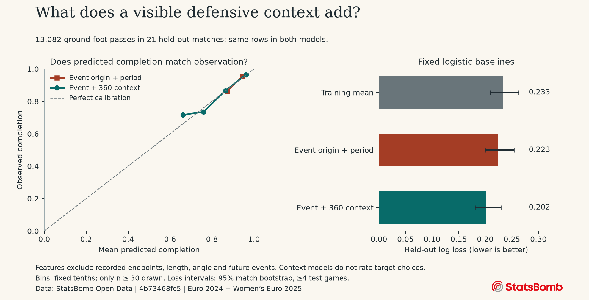

An inferred receiver identity and a higher territorial estimate do not establish that a lane was available, onside or tactically better.
Loading reviewed analysis…
A review case, not a verdict
These 12 published cases come from 146 flagged held-out events. Alternative passes have no observed outcomes.
Visible candidate estimates
Forward gain is target x minus origin x in normalized StatsBomb units. Expected positive gain = experimental xPass × max(forward gain, 0); failure has zero gain, with no turnover penalty.
| Teammate | Inferred chosen | Forward gain | Distance | Nearest lane defender | Experimental xPass | Expected positive gain | Review flag |
|---|
What changes in unseen matches?
Identical held-out observations within each population. Fixed models, without test-set tuning.

| Estimator | Features | Train passes | Test passes | Log loss | 95% match interval | Brier | AUC |
|---|
Lower log loss and Brier are better. AUC measures discrimination. The interval is a conditional match-cluster bootstrap for log loss, not uncertainty about counterfactual passes or model retraining.
Download figure (SVG) · Aggregate scores (CSV) · Calibration counts (CSV)

What this project can support
The local Python and Streamlit project explores all 82 matches. This Vercel companion publishes 12 analytical case studies and aggregate validation. It does not distribute the underlying 360 coordinate files or fit models in your browser.
A conservative target proxy
Open 360 frames identify the actor but give other players no persistent IDs. To place an annotated intended recipient in a snapshot, the model requires an earlier same-team actor event within five seconds, a current teammate within three coordinate units of that earlier origin, and a two-unit nearest-neighbor margin. Only on-pitch targets qualify. That identity remains unverified and recently involved players are overrepresented.
Leakage and validation
Recorded endpoints, provider pass length/angle, outcomes, duration and future receipts are excluded from prediction features. Collector pressure is display-only. Entire matches are split within each tournament: 61 training, 21 held out, seed 2026. Imputation and scaling use training rows only. The fixed logistic model drives candidate estimates; gradient boosting is a separate comparison, with random-row early stopping disabled.
What a probability leaves out
Targets are stationary visible teammates, assuming a ground pass. Estimates are withheld for missing features, off-pitch targets, unknown or outside camera visibility, and features outside the training 1st–99th percentile. Those marginal checks do not establish joint support, offside legality, pass feasibility or calibration on unchosen options. Finite off-pitch opponents remain in the spatial calculations.
A territorial proxy, not expected threat
Expected positive gain assigns zero progress to failure and ignores turnover cost. It is not xT or goal value. A review flag requires a different inferred target, at least 10 forward coordinate units, probability at least 70%, and at least five more expected positive units than the inferred chosen recipient. These fixed rules identify hypotheses for video review.
Which 12 cases are published?
All are flagged cases, so this selection is not a representative sample of passing or proof that the model is correct. No tactical explanation or player ranking is inferred.
Data and terms
Data: StatsBomb Open Data, UEFA Euro 2024 and Women's Euro 2025. Source revision: . Untyped ground passes with either foot in periods 1–4; unknown outcomes excluded. Coordinates use the actor-oriented 120 × 80 normalized pitch and are not surveyed metres.
The StatsBomb Public Data User Agreement governs the source data, including attribution, commercial-use and redistribution restrictions. Original project code is MIT licensed. Conceptual reference: Conor Sharpe, xPass 360, 17 June 2025. This implementation does not reproduce Hudl's proprietary model.